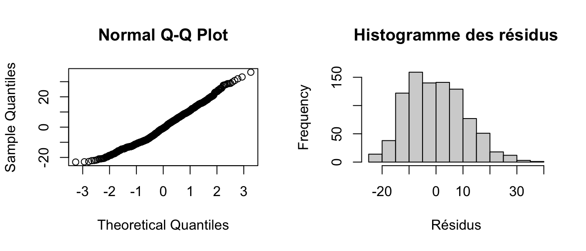

S1_7_Mesures_repetees
1 Problème posé
Ici, c’est un effet “sujet” (≠ d’un effet “centre”).
Mais ça ne se traite pas pareil :
Les sujets d’un même centre (une classe, un service hospitalier, etc.) sont en général considérés comme homogènes.
Mis à part les variables explicatives du modèle (âge, sexe, etc.), rien ne permet de distinguer ces sujets entre eux.
On peut donc supposer que la corrélation de la variable étudiée est la même pour toutes les paires de sujets d’un centre (corrélation constante égale à 1), ce qui simplifie beaucoup les calculs.
Avec des mesures répétées, la situation change.
- Si l’on mesure chaque jour pendant un mois, la valeur observée un jour donné sera en général plus proche de celle du lendemain que de celle observée 10 ou 20 jours plus tard : la corrélation dépend alors de l’écart de temps entre les mesures.
2 Exemple R 1
- Jeu de données
scl90: mesures répétées du score SCL90 à 8 reprises sur 56 jours chez 146 sujets.
Question : étude de l’évolution du score SCL90 au cours du temps.
- Data management :
scl$VISIT.NUM <- recode(scl$VISIT,J0=1,J4=2,J7=3,J14=4,J21=5,J28=6,J42=7,J56=8)- Approche naïve : régression linéaire classique entre score et temps.
mod1 <- lm(depression ~ VISIT.NUM + age, data=scl, na.action=na.exclude)
tbl_mod1 <- tbl_regression(
mod1,
label = list(VISIT.NUM ~ "Visit Number", age ~ "Age (years)")
) %>%
modify_footnote(
estimate ~ "Coefficients calculated from linear regression model without accounting for repeated measures."
)
tbl_mod1| Characteristic | Beta1 | 95% CI | p-value |
|---|---|---|---|
| Visit Number | -3.2 | -3.5, -2.8 | <0.001 |
| Age (years) | 0.11 | 0.06, 0.17 | <0.001 |
| 1 Coefficients calculated from linear regression model without accounting for repeated measures. | |||
| Abbreviation: CI = Confidence Interval | |||
Résultats :
Interprétables pour le calcul du coefficient de régression (beta),
mais est à proscrire pour le calcul de son incertitude (erreur type) car il ignore la structure d’autocorrélation des résidus (liés par l’effet « sujet »), violant la condition de validité d’indépendance des résidus de la régression linéaire
On pourrait vérifier en regardant les résidus du modèle avec QQplot et histogramme :

C’est pas terrible !!
Examen dans le détail de la structure de corrélation :
# création d'un tableau des résidus
dtresid <- na.omit(data.frame(scl$NUMERO, scl$VISIT.NUM, residuals(mod1)))
# reshaping pour avoir une colonne par visite (transformation en "large")
names(dtresid) <- c("NUMERO","VISIT.NUM","RESID")
dtresid.w <- reshape(dtresid, v.names="RESID", idvar="NUMERO", timevar="VISIT.NUM", direction="wide")
# calcul de la matrice de corrélation des résidus
round(cor(dtresid.w[,2:9], use="pairwise.complete.obs"),2) RESID.1 RESID.2 RESID.3 RESID.4 RESID.5 RESID.6 RESID.7 RESID.8
RESID.1 1.00 0.66 0.57 0.49 0.42 0.42 0.32 0.28
RESID.2 0.66 1.00 0.77 0.72 0.64 0.58 0.49 0.41
RESID.3 0.57 0.77 1.00 0.89 0.73 0.68 0.57 0.50
RESID.4 0.49 0.72 0.89 1.00 0.90 0.86 0.75 0.63
RESID.5 0.42 0.64 0.73 0.90 1.00 0.88 0.78 0.71
RESID.6 0.42 0.58 0.68 0.86 0.88 1.00 0.87 0.81
RESID.7 0.32 0.49 0.57 0.75 0.78 0.87 1.00 0.87
RESID.8 0.28 0.41 0.50 0.63 0.71 0.81 0.87 1.00Pour mieux illustrer la matrice de corrélation des résidus : correlation plot